Система очистки дома BORK V601
В одном приборе совмещены уникальные способности природы очищать, увлажнять и ионизировать воздух.
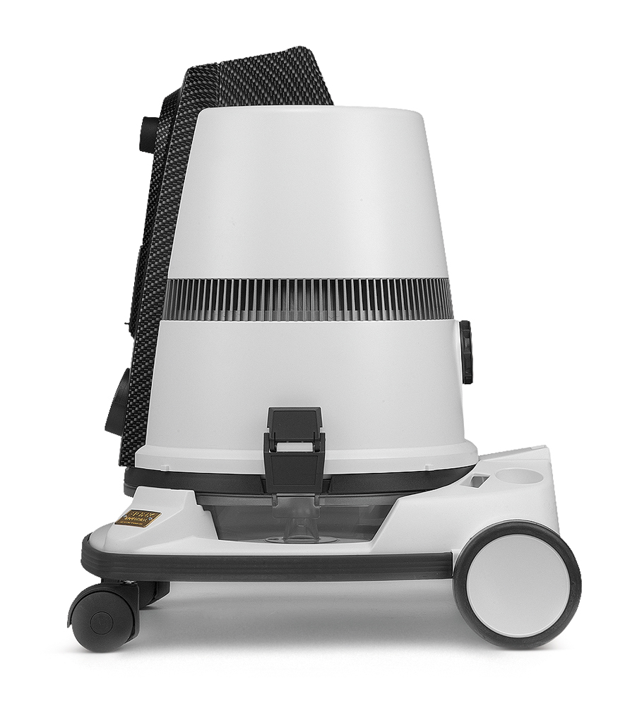 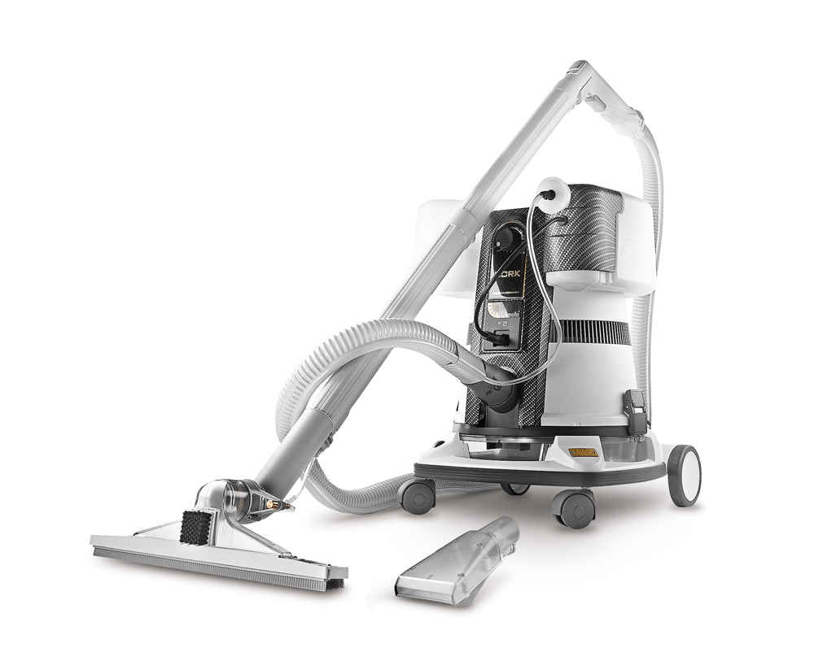
BORK V601 - это высококачественная комплексная система очистки воздуха и помещения без расходных материалов.
Вам потребуется только вода
Вода – это лучший фильтр
Природа использует воду (дождь, снег, туман) чтобы очистить воздух, которым мы дышим. В системе BORK V 601 в качестве фильтра используется барботажный принцип, высокотехнологичный сепаратор и вода - самая надежная ловушка для мусора, домашней пыли, аллергенов, пылевых клещей.
Мокрая пыль не летает!!! Вся домашняя пыль, попадая в бурлящую водную ловушку, никогда больше не вернется в Ваш дом! Абсорбционный метод позволяет удалять вредные газы из воздуха.
Как известно, жизнь зародилась в воде и по-прежнему остается тесно связанной с водой. Поэтому физико-химические свойства воды имеют фундаментальное значение для процессов жизнедеятельности.
Вода – это природный растворитель, который вбирает в себя все, с чем входит в контакт.
BORK V601– это воплощение Мечты, жить в окружении чистого и свежего воздуха.
Во время работы системы, Вы можете представить себя на берегу моря, океана вблизи прибоя и насладиться чистым, свежим и очень полезным воздухом. Как следствие, профилактика дыхательных путей.
Ароматерапия

Вечером, после работы, включив систему и добавив несколько капель ароматического масла, к примеру, хвойного. Вы почувствуете себя, как в чистом хвойном лесу. Польза огромная – снимает напряжение, расслабляет нервную систему, хотя бы на время Вы забываете о заботах и проблемах.
Ароматерапия
Древнейшая эстетическая методика воздействия природных ароматов (эфирных масел)
на эмоции и здоровье через обонятельные центры. Древние философы считали, что эфирные субстанции (гормоны растений) были дарованы людям богами Олимпа в качестве элемента высочайшего Света (ЭФИР), пробуждающего любовь.
Нет на земле ни одного человека, который бы не применял ароматы. Совершенно естественно, не акцентируя свое внимание на этом факте, люди используют эфирные масла в пищу и в быту с рождения до самой смерти, не нуждаясь в специальном обучении или терминах. Ароматы - неотъемлемая часть жизни, как тепло, цвет и звук.
Ароматерапия — это метод лечения с применением натуральных эфирных масел, вводимых в организм через дыхательные пути, кожу и слизистые оболочки.
Цитрус (Zitrus)
В ароматерапии используются эфирные масла эвкалипта, которые обладают уникальными свойствами.
Эфирное масло эвкалипта - это антисептическое и противовоспалительное масло. Эффективно при лечении гриппа, простуды, бронхита, синусита, астмы и других респираторных заболеваний, облегчает дыхание при насморке и гайморите.
Так же, укрепляет иммунную систему, обладает выраженной противовирусной активностью. Масло эвкалипта - это бактерицидное (распыление 2 % эмульсии эфирного масла убивает 70 % стафилококков в окружающем воздухе), антипаразитическое, заживляющее, предупреждает инфекционные и легочные заболевания, отпугивает москитов.
В ароматерапии используется эфирное масло мяты.
Оно имеет сильный свежий мятный аромат, и при смешивании его с другими маслами, используемыми совместно в ароматерапии (эвкалиптовым, лавандовым, розмариновым, цитрусовым), этот запах доминирует. Эфирное масло мяты - прекрасный анальгетик, снимает головные боли и мигрени. Применяется для лечения простудных заболеваний, различных воспалений верхних дыхательных путей, гриппа, насморка, бронхита. Яркий, освежающий запах мяты прекрасно стимулирует при умственных переутомлениях, смягчает состояние напряжения, освежает и бодрит.
Горный лес (Bergwald)
В ароматерапии используются хвойные масла, которые обладают свежим, смолистым, терпко-прохладным ароматом. Людям испокон веков были известны целебные свойства хвойных растений. На человека благотворно действует уже само их соседство: летучие фитонциды, содержащиеся в хвое, наполняют воздух волшебным ароматом, уничтожают болезнетворные микробы и поднимают настроение.
Распыление хвойного масла в помещениях повышает иммунную защиту организма,
снимает воспалительные заболевания органов дыхания, облегчает мышечные боли при ревматизме, остеохондрозах, артрозах, невралгии, устраняет неприятные запахи, оставляя тонкий аромат хвойного леса.
Мотивация (Motivation)
Композиция из эфирных масел апельсина, травы бородача и ягод можжевельника.
Эта ароматная смесь действует возбуждающе. Используется для большей концентрации и умственной свежести.
В ароматерапии применяется эфирное масло апельсина
Наряду с антисептическим действием, обладает сильным успокаивающим эффектом. Помогает при бессоннице, депрессии, стрессах. Снижает давление, повышает концентрацию внимания. Очищает кровь, нормализует работу кишечника, углеводно-жировой обмен, предупреждает появление камней в желчном пузыре, способствует устранению целюлита. Улучшает цвет лица, эффективно для сухой кожи. Дезинфицирует полость рта.
В ароматерапии масло можжевельника
Масло можжевельника эффективно при простудных заболеваниях: ОРВИ, гриппе, аденовирусной инфекции. Оно способствует выведению токсинов.
В ароматерапии эфирное масло бородача называют маслом спокойствия, оно имеет сильное успокаивающее воздействие на нервную систему. Могут быть решены глубокие психологические проблемы, а ипохондрики почувствуют себя лучше, регулярно принимая масло.
Аэроионизация воздуха
Существуют временные, местные ионизаторы - такие как грозы, водопады, горные реки и прибой. В результате всех этих процессов, а также явлений биологической жизни в окружающей нас среде устанавливается естественная концентрация аэроионов.
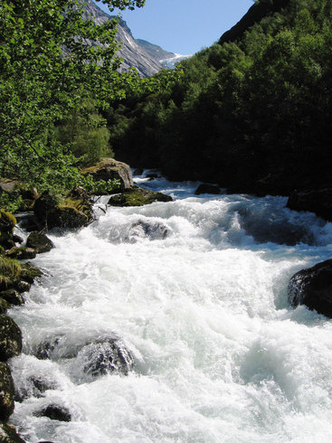 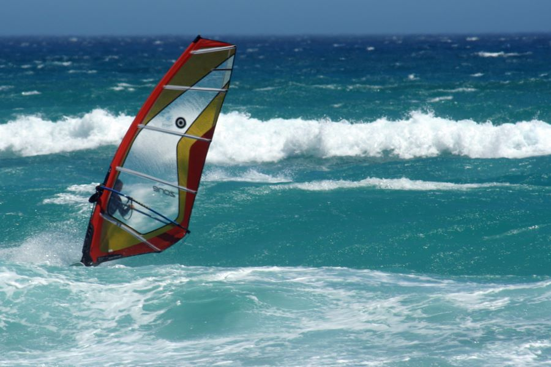Система очистки BORK V601 – это и водопад и горная река и прибой.
АЭРОИОН — любая заряженная аэрозольная или кластерная частица, взвешенная в воздухе, если ее средняя скорость относительно воздуха определяется главным образом электрическими силами. Аэроионы являются наиболее чувствительным физическим индикатором загрязненности воздуха и оказывают непосредственное воздействие на здоровье человека. Искусственно Аэроионы могут создаваться при распылении любого твердого или жидкого вещества, контактной зарядки аэрозольных частиц и др. Считается, что легкие отрицательные А., включающие кислород, положительно влияют на живой организм. Высокое содержание легких отрицательных Аэроионов наблюдается в чистом горном, морском, лесном, подземном воздухе. Наличие пыли и химических загрязнений резко (в десятки раз) уменьшает содержание легких отрицательных Аэроионов.
АЭРОИОНИЗАЦИЯ — процесс искусственной ионизации воздуха с помощью ионизаторов воздуха (аэроионизаторов). Осуществляется для компенсации дефицита или отсутствия полезных для здоровья легких отрицательно заряженных ионов в производственных, служебных, бытовых помещениях либо (в терапевтических целях) в лечебно-профилактических учреждениях.
Опыты показали: чем выше концентрация легких отрицательных аэроионов, тем чище воздух. Было установлено, что периоды снижения заболеваемости - легочными болезнями, в том числе и с обострениями, бронхиальной астмой, органов желудочно-кишечного тракта и ряда других, совпадают с периодами повышения концентрации легких ионов в атмосферном воздухе, и наоборот. Таким образом, отрицательные аэроионы оказывают стимулирующий эффект, положительные - подавляют иммунную систему.
Принцип работы
Системы очистки BORK V601
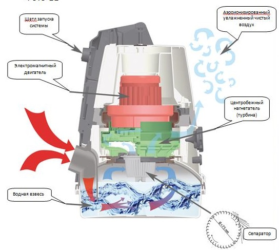- На первом этапе пыль задерживается в воде.
- На втором, за счёт центробежной силы, водная взвесь связывает мельчайшие пылевые частицы.
- В заключении, пыль вдавливается обратно в воду.
Функции системы
- Воздухоочиститель без расходных материалов.
- Ароматизация / ингаляция.
- Аэроионизация.
- Естественный, как в природе, увлажнитель воздуха.
- Пылесос с аквафильтром с постоянной мощностью всасывания (всегда высокое качество уборки).
- Вакуумная очистка и ароматизация подушек, перин, одеял и одежды.
- Функция работы на выдув (возможность удалить пыль из труднодоступных мест).
- Удаляет засоры в раковинах, ваннах и трубах.
- Сбор жидкости.
- Качественная уборка занавесок, штор, гобеленов, гардин.
- Новый Carbon Design
Комплектация BORK V601
 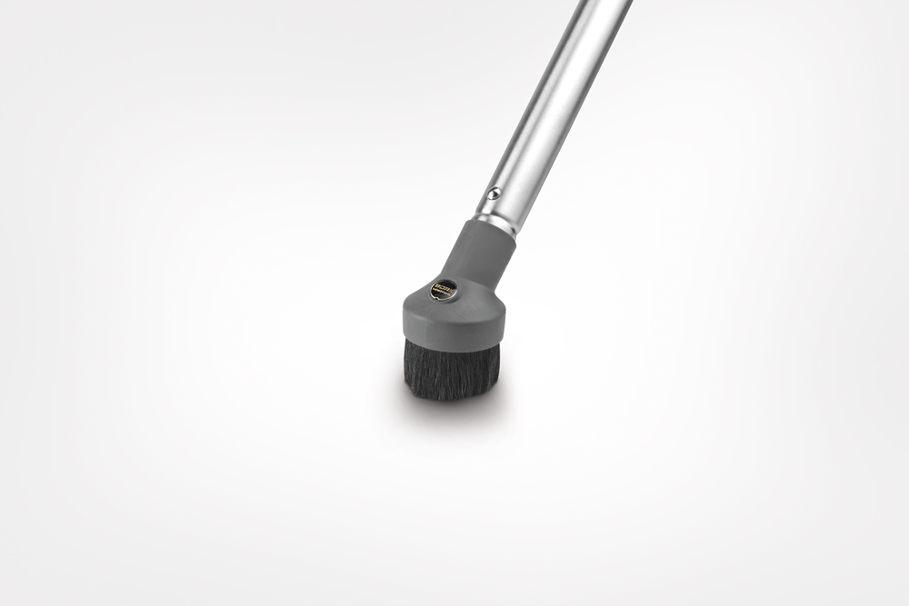
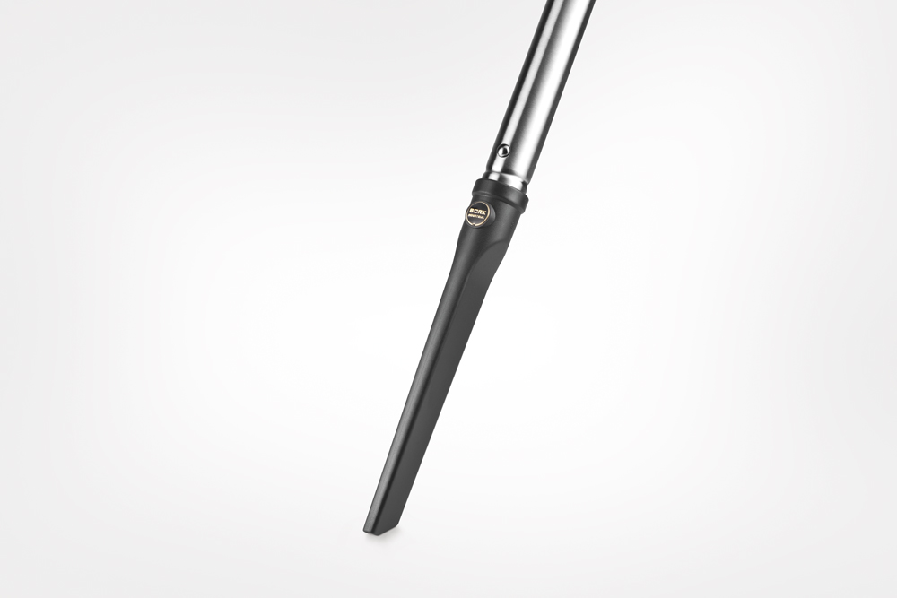
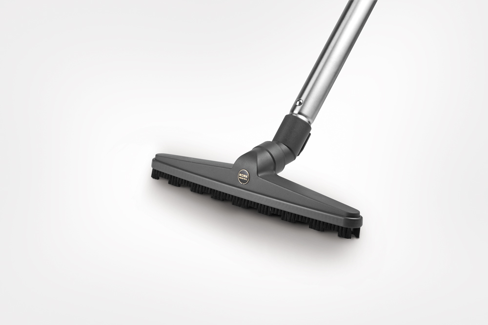
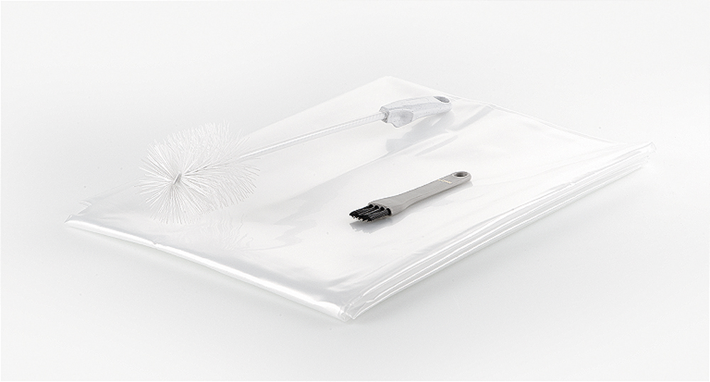
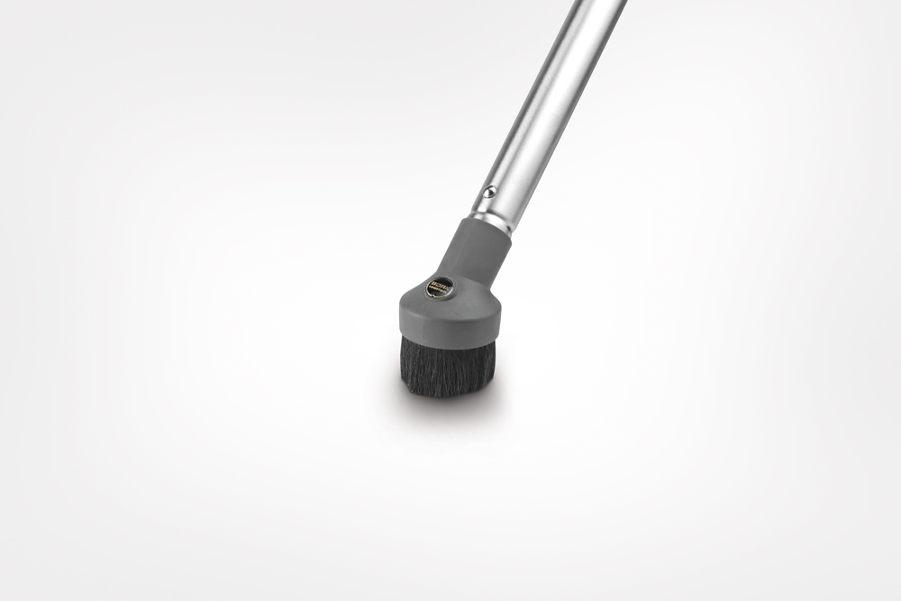
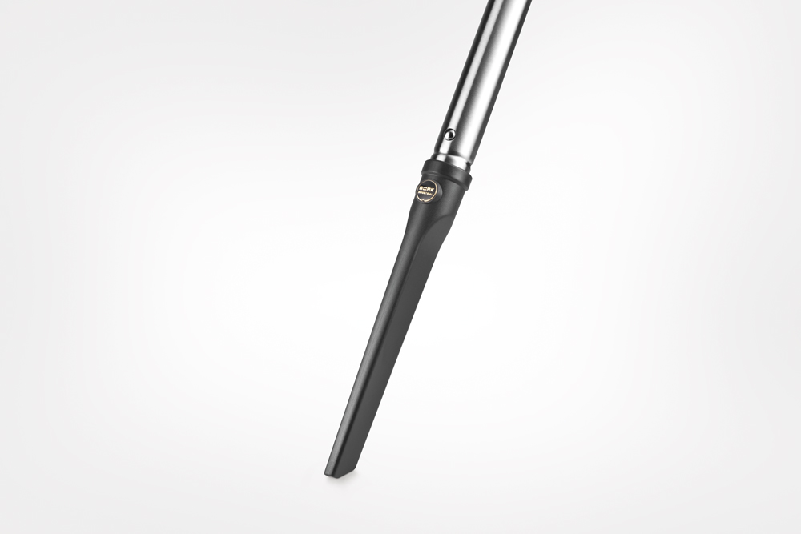
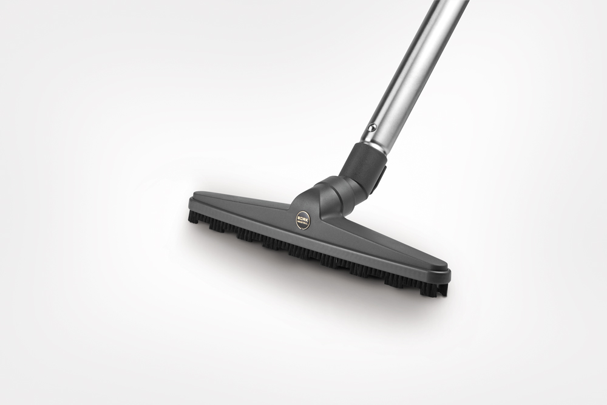
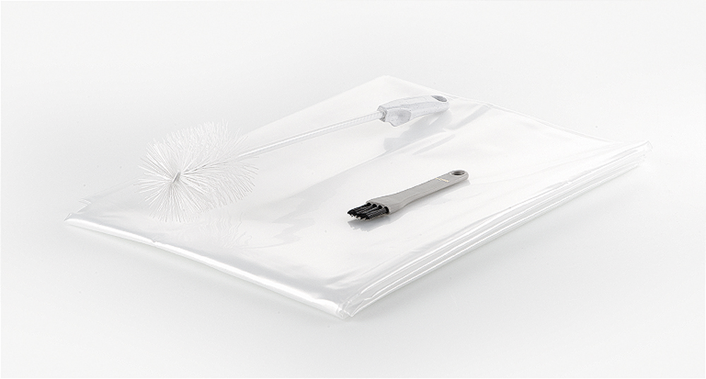
- Насадка – комбинированная (пол/ковер)
- Насадка – для гладких покрытий (паркетная)
- Насадка – для деликатной уборки мягкой мебели (также для сбора жидкости)
- Насадка – для деликатной уборки корпусной мебели (для пробивания засоров)
- Насадка – для деликатной уборки (щелевая)
- Пластиковый пакет для вакуумизации + 2 щетки для обслуживания
- Телескопическая труба (стальная)
- Телескопическая труба с держателями для кабеля (стальная)
Дополнительные возможности

- Комплект для влажной уборки BORK V6FS1
- Электрощетка BORK AV601A
Технические характеристики:
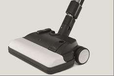Система очистки дома BORK V601
- Потребляемая мощность: 950 Вт/Макс. 1350 Вт.
- Турбореактивный сепаратор со скоростью работы: 6000 - 20000 об/мин
- Макс. производительность по воздухообмену: 2600 л/мин.
- Длина сетевого шнура: 7 метров
- Уровень шума: < 74 Дб
- Все трубы с фиксаторами, все винты в системе, вал двигателя выполнены из высококачественной нержавеющей стали V2a.
- Отключение двигателя при снятии резервуара для воды.
Комплект для влажной уборки BORK V6FS1
Электрощетка BORK AV601A
Технические характеристики:

Система очистки дома BORK V601
- Потребляемая мощность: 950 Вт/Макс. 1350 Вт.
- Турбореактивный сепаратор со скоростью работы: 6000 - 20000 об/мин
- Макс. производительность по воздухообмену: 2600 л/мин.
- Длина сетевого шнура: 7 метров
- Уровень шума: < 74 Дб
- Все трубы с фиксаторами, все винты в системе, вал двигателя выполнены из высококачественной нержавеющей стали V2a.
- Отключение двигателя при снятии резервуара для воды.
Электрическая щетка BORK V601A
- Потребляемая мощность: 100 Вт
- Дополнительный ремень.
- 3-х позиционный переключатель
Моющий комплект BORK V6FS1
- Потребляемая мощность: 25 Вт
- Производительность: 35 л/час
- Давление насоса (помпы): 2,8 бар
- Объём резервуара для моющего раствора: 4 литра
Двигатель нового поколения
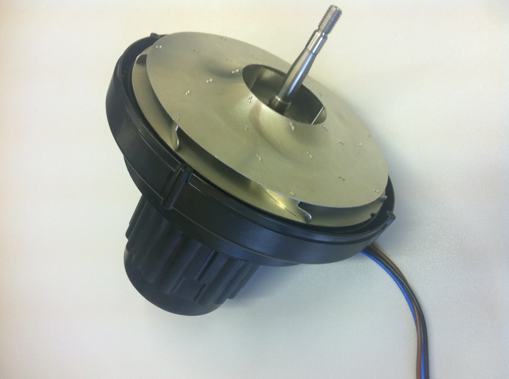 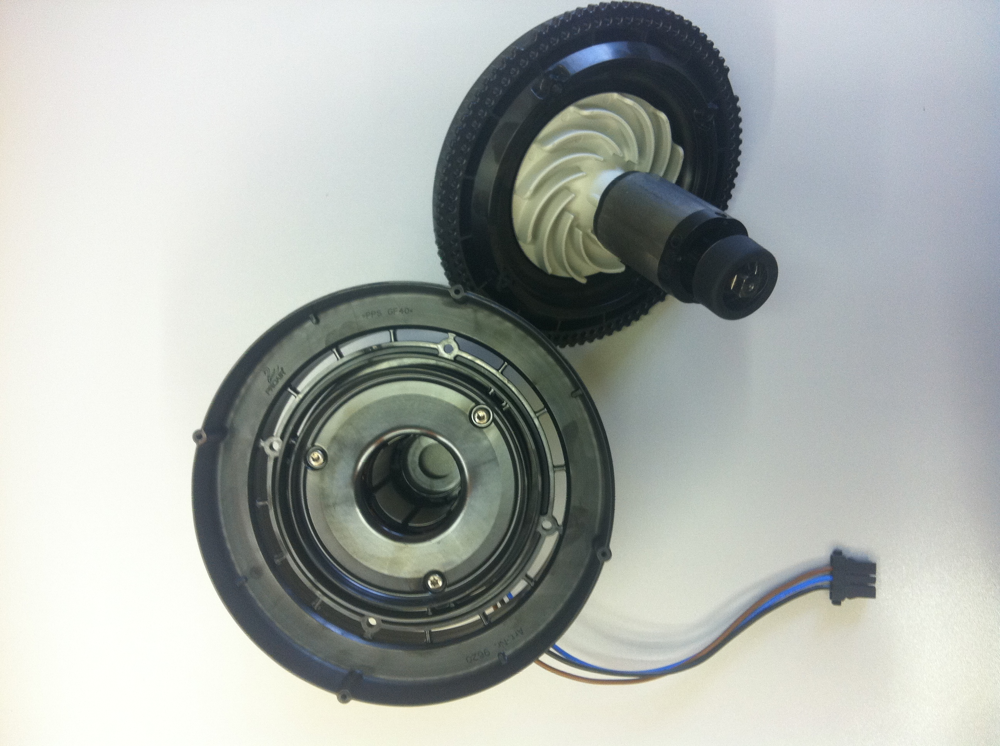- Ресурс двигателя не ограничен. Неизнашиваемый магнитный ротор
- Ресурс работы подшипников в двигателе 6000 часов (50 – 60 лет)
- Для сведения: ресурс стандартных двигателей в пылесосах составляет 600 – 700 часов.
- Звукопоглощающий элемент обеспечивает низкий уровень шума < 74 Дб
Новый центробежный нагнетатель воздуха (турбина)
 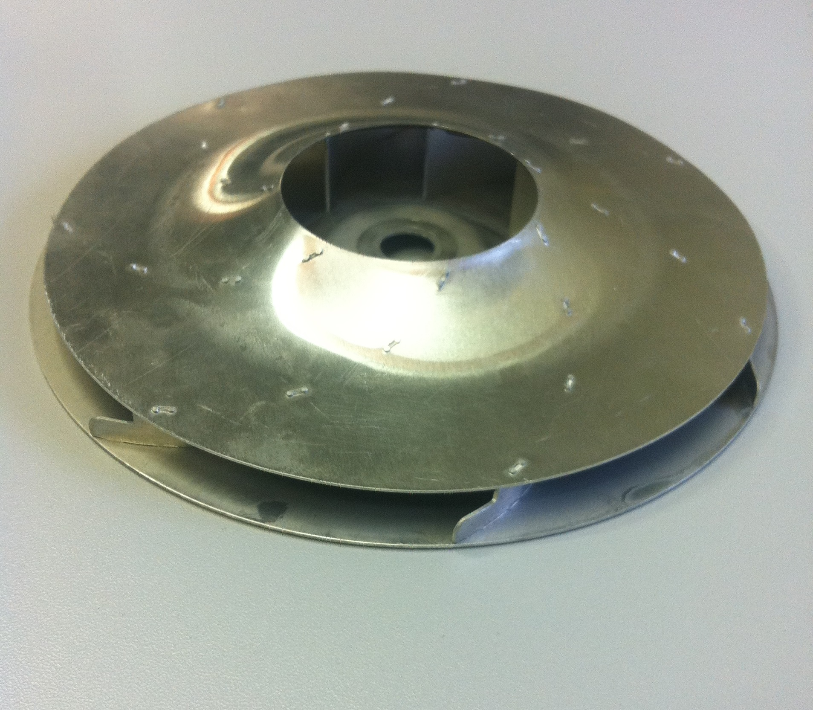
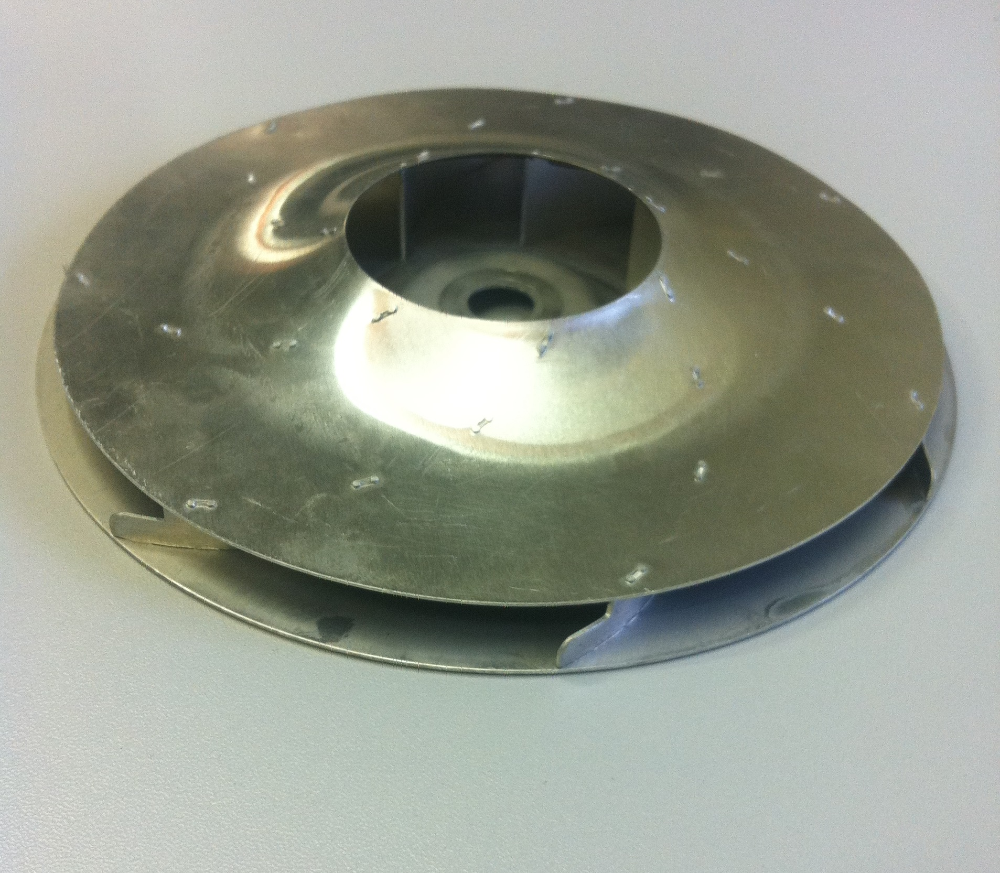